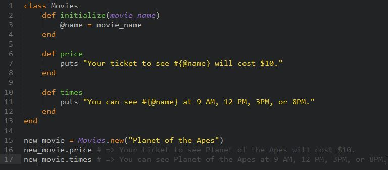

For the past couple weeks, we have mostly been using methods to organize our code in ruby, and use the built-in objects that ruby provides. Most recently we have started to learn how to use Ruby Classes. A class in ruby is essentially a way to create numerous methods within one object, and gives you the ability to call on various attributes of that class from anywhere.
Lets look through an example of a Class where we ask what the ticket prices and timings are for a movie in a theater.
Within this class, we have three different methods. The initialize method is absolutely necessary in any class. This method takes the parameter (movie_name) and also is what sets the instance variables. These variables are essentially variables that are able to accessed by any method within a class by putting a "@" in front of their names. This allows us to bypass the issue of scope within the class.
These methods within classes are also only able to be changed within the class itself, but as you can see, can be executed outside the class. A new class can be created using the new_class = Class.new syntax. Its methods can be executed using new_class.method.
Classes are really useful tools in ruby because they allows us to create specific objects that can be accessed externally and used for any number of purposes. It has been really exciting for me to learn over the past week how to utilize classes, and I'm looking forward to making more complex ones in the future!
Thanks for reading,
Vineet Rastogi